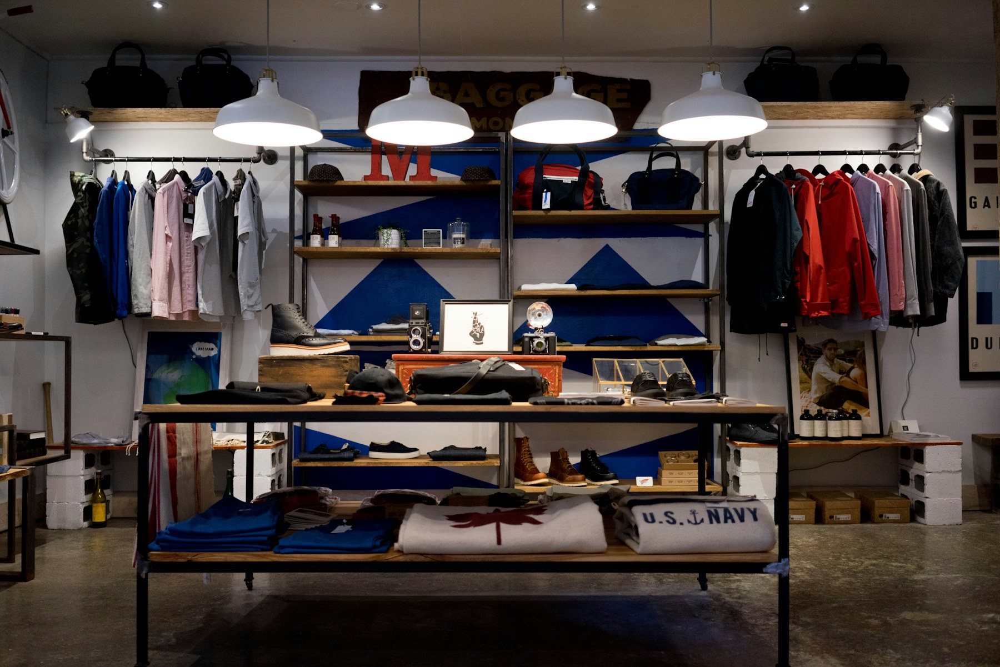

Dossier public
Commerce Vivant
Remettre en activité les locaux commerciaux inoccupés et soutenir les usages utiles aux habitants.

Commerce Vivant agit sur les cellules commerciales fermées, les rez-de-chaussée vacants et les locaux sans usage afin de préparer leur remise en mouvement avec les propriétaires, collectivités, porteurs de projets et habitants.
Pourquoi ce pôle existe
Un local fermé fragilise la vie de quartier, réduit l'attractivité d'une rue et limite l'accès aux services de proximité. Le pôle Commerce Vivant vise à qualifier ces situations et à construire des solutions progressives, réalistes et adaptées à chaque territoire.
Méthode d'action
TVF prépare un diagnostic, qualifie les besoins locaux, recherche des usages possibles, identifie les ressources mobilisables et accompagne la mise en relation entre acteurs. Aucun commerce, partenaire ou résultat n'est affiché sans validation réelle.
Voir l'action Commerces inoccupésTVF exploite-t-elle directement les commerces ?
Le cadre dépend du projet, du propriétaire et du territoire. L'association peut faciliter, coordonner ou accompagner une solution, sans promettre d'exploitation automatique.
Un local peut-il être proposé ?
Oui. Les informations utiles sont l'adresse, l'état général, les contraintes connues, le contact propriétaire et les usages envisageables.
Commerces inoccupés : une question de centralité, d’emploi et de qualité de vie
La fermeture d’un commerce n’est jamais seulement une vitrine vide. Elle signale souvent une fragilité plus large : baisse de fréquentation, concurrence périphérique, changement des habitudes d’achat, difficulté de transmission, loyers inadaptés, locaux obsolètes, manque d’habitants dans le centre ou perte de services publics de proximité.
Les programmes nationaux de revitalisation montrent que le commerce est indissociable de l’habitat, de l’espace public, de la mobilité et de la présence d’activités. Action cœur de ville intègre explicitement le développement économique et commercial dans ses axes, tandis que Petites villes de demain cible les centralités de moins de 20 000 habitants.
Le commerce de proximité dépend d’un écosystème : logements occupés, flux piétons, stationnement, accessibilité, pouvoir d’achat, qualité de l’espace public et loyers. Une cellule commerciale dégradée ou trop grande pour un entrepreneur local reste souvent fermée même lorsqu’un besoin existe.
TVF peut recenser les locaux, qualifier leur état, identifier les usages possibles, mettre en relation propriétaires et porteurs d’activités, organiser des occupations temporaires, intégrer la rénovation légère et faciliter l’émergence de tiers-lieux, ateliers, boutiques éphémères ou services associatifs.
Carte des cellules commerciales à qualifierCouche prévue : locaux fermés, rez-de-chaussée actifs, proximité des logements vacants, accessibilité, usages possibles.
Exemple fictif à visée pédagogiqueUne ancienne boutique fermée depuis plusieurs années pourrait devenir atelier partagé pour artisans, avec une phase test de six mois et un loyer solidaire. Exemple fictif : il sert à expliquer une option de reconversion, pas à annoncer un projet existant.
Pourquoi l’habitat compte-t-il pour le commerce ?
Un centre habité crée des flux quotidiens, sécurise la rue et soutient les achats réguliers.
Un commerce fermé doit-il toujours redevenir un commerce ?
Pas nécessairement. Certains locaux peuvent accueillir un atelier, une association, un service, une formation ou un usage temporaire.
Comment éviter les faux espoirs ?
En vérifiant l’état du local, les contraintes de bail, le coût de remise en état et la demande réelle avant communication.
Sources citéesANCT, Action cœur de villeANCT, Petites villes de demain
Rendre un local commercial lisible, testable et utile
Commerce Vivant se concentre sur les vitrines fermées, cellules vides et rez-de-chaussée sans usage. Le sujet n'est pas seulement immobilier : un commerce vacant modifie la perception d'une rue, les flux piétons, la confiance des porteurs de projet et la vie quotidienne des habitants.
1. Repérer
Identifier la cellule, son état, sa visibilité, son environnement et sa durée apparente de fermeture.
2. Comprendre
Qualifier les freins : loyer, travaux, accessibilité, copropriété, destination, stationnement, flux ou image de rue.
3. Rencontrer
Identifier propriétaire, gestionnaire, commune, association de commerçants et porteurs potentiels.
4. Tester
Imaginer un usage temporaire : boutique éphémère, atelier, permanence, exposition, service local ou formation.
5. Encadrer
Préciser durée, charges, assurances, travaux légers, communication et conditions de sortie.
6. Mesurer
Suivre ouverture, fréquentation qualitative, satisfaction, besoins de travaux et suite possible.
| Situation | Risque | Réponse Commerce Vivant |
|---|---|---|
| Vitrine fermée en centre-ville | Rue perçue comme en déclin. | Diagnostic de vitrine, usage temporaire et recherche de porteur local. |
| Local trop grand ou trop cher | Aucune activité ne peut s'installer durablement. | Scénario de partage, occupation progressive ou usage associatif encadré. |
| Local dégradé | Travaux bloquants et incertitude sur le coût. | Estimation, réemploi de matériaux possible, priorisation des travaux utiles. |
TVF ouvre-t-elle directement des commerces ?
Non. Le pôle qualifie les locaux, les besoins et les scénarios possibles, puis travaille avec les porteurs et acteurs concernés.
Un local peut-il devenir autre chose qu'un commerce ?
Oui, selon son statut et le besoin local : atelier, lieu associatif, service, formation ou activité temporaire.
Quels partenaires sont concernés ?
Propriétaires, foncières, communes, managers de commerce, chambres consulaires, artisans, associations et porteurs de projet.
FAQ
Questions fréquentes sur ce pôle
Commerce Vivant clarifie les conditions de réactivation des locaux commerciaux et les acteurs à associer.
Un commerce fermé peut-il changer d'usage ?
Oui. Commerce Vivant étudie cette possibilité si le local, le bail, la copropriété, la règlementation et le besoin local le permettent.
Qui doit être associé ?
Pour Commerce Vivant, propriétaire, commune, EPCI, chambres consulaires, artisans, commerçants, associations de centre-ville et porteurs d'activité peuvent être mobilisés.
Quel est le premier critère de réussite ?
Pour Commerce Vivant, la priorité est de relier un local disponible à un besoin réel, un porteur fiable et un modèle économique soutenable.